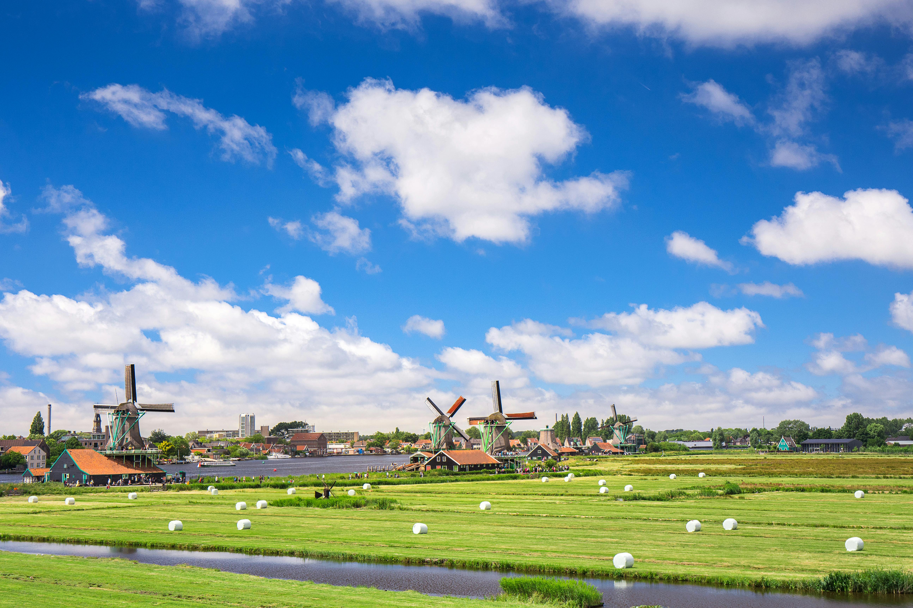

JAPAN | GREECE | NETHERLANDS | NEW ZEALAND | SOUTH AFRICA
Exploring the world can be transformative, offering insights into diverse cultures, histories, and landscapes. Whether you're seeking tranquility, adventure, or a deep dive into history, there's a destination ready to exceed your expectations. Here are the top 5 destinations you absolutely must consider for your next travel adventure.
Top 5 Destinations That MUST Be on Your List to Visit!
1. Kyoto, Japan
Kyoto, the heart of traditional Japan, is where the past dances with the present. From the serene Arashiyama Bamboo Grove to the historic Fushimi Inari Shrine, Kyoto offers a glimpse into Japan’s soul. The city’s well-preserved temples, vibrant tea houses, and the stunning cherry blossoms in spring are essential for any cultural enthusiast's travel list.

2. Santorini, Greece
Santorini spells romance with its cliffside homes and spectacular sunsets. This island in the Aegean Sea is famous for its dramatic views, cobalt blue domes, and unique beaches with volcanic sands. Exploring the picturesque towns of Fira and Oia and enjoying a sunset dinner with a view of the caldera is an unforgettable experience that epitomizes the beauty of Greece.

3. Amsterdam, Netherlands
Amsterdam is a blend of historical charm and cutting-edge culture. The city’s picturesque canals, historic houses, and vibrant cultural scene make it a must-visit. Explore the Van Gogh Museum and the Anne Frank House, bike along its expansive network of cycle paths, or simply relax in one of the many cozy cafés. Amsterdam is a city where tradition and modernity collide in the most beautiful way.
4. New Zealand's South Island
For those who love the great outdoors, New Zealand’s South Island offers an unparalleled natural beauty. From the majestic Southern Alps to the tranquil waters of Milford Sound, the island is a haven for thrill-seekers and nature lovers alike. Whether it’s hiking, skiing, or wine-tasting, the South Island offers a diverse range of activities set against some of the world’s most breathtaking backdrops.
5. Cape Town, South Africa
Cape Town is a beacon of beauty, history, and cultural diversity. Nestled between mountains and beaches, the city is vibrant and full of life. Hike up Table Mountain, visit Nelson Mandela’s former cell at Robben Island, and explore the bustling markets. Cape Town’s rich history and dynamic landscapes make it an essential destination for any traveler.